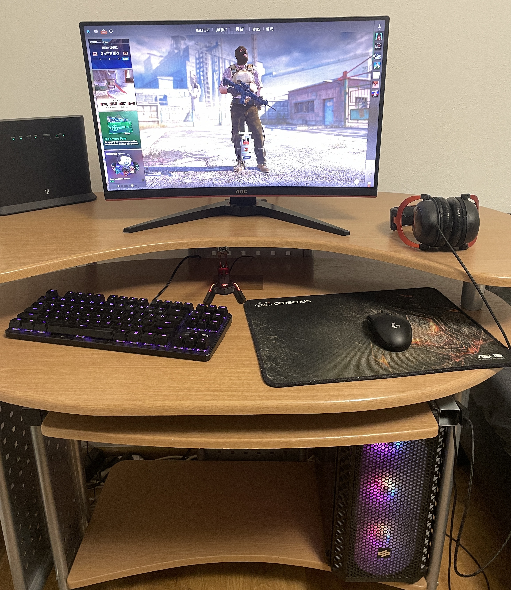

Moje pracovné prostredie

Okrem programovania, monitor slúži aj na chvíľu oddychu pri hrách ako Counter-Strike.
Myš používam pri programovaní aj hraní hier, kde mi vyhovuje jej presnosť a rýchla odozva.
Na mojej klávesnici sa mi dobre píše a podsvietenie oceňujem najmä pri práci večer.
Slúchadlá používam najmä pri počúvaní hudby, sledovaní videí alebo počas hrania hier.
Wi-Fi router mi zabezpečuje stabilné pripojenie k internetu pri práci, štúdiu aj voľnom čase.